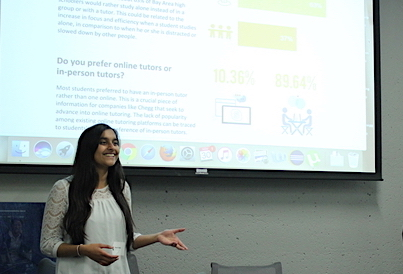
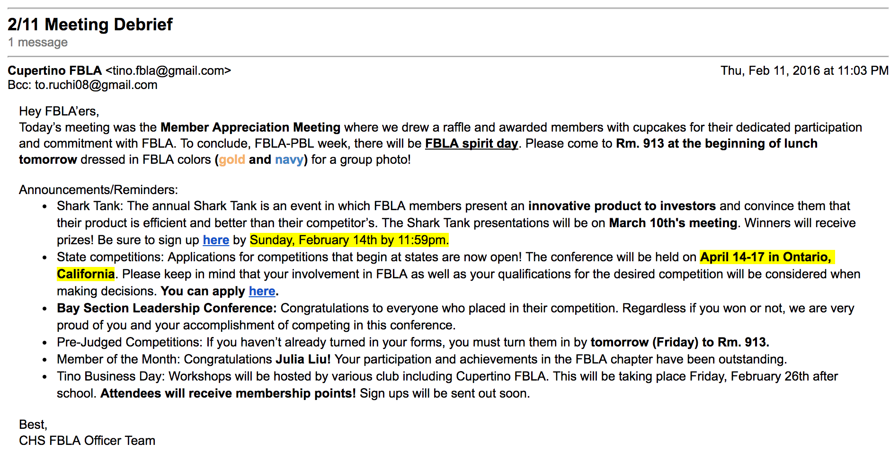
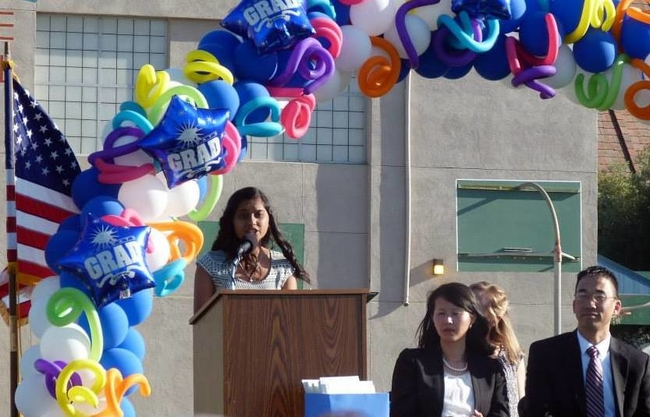
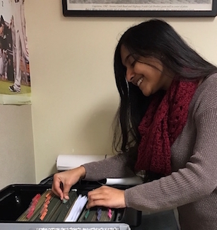

Special Skills
Some of the special skills that make me qualified to be a Program Manager.
Leadership Skills
Program Managers anticipate a lot of special skills, most importantly, leadership skills. By participating in many clubs on campus and gaining leadership positions I have been able to learn how to lead various groups of people. Overall, I am an officer and have leadership positions in: FBLA, ASB, Speech & Debate, Upcycling, Girls Who Code, and Women in Tech. Through each and every one of these positions, I have been able to lead and organize events for members. As a result, I have attained the leadership skills needed to be a successful Program Manager and believe that I can do well in this profession because of this skill.
Communication Skills
As the Leadership Associate for Cupertino FBLA, I learned different ways to communicate with a variety of different audiences. By contacting FBLA members via email, facebook, instagram, and other social media platforms twice a week, I have been able to effectively and accurately convey information about meetings’ time, date, and location. Additionally, I was able to create presentations that were concise and included all the relevant information that was needed for each project, community service opportunity, competition events, or business tour. Moreover, I was in charge of checking any incoming and sending any outgoing emails to members for clarification, questions, concerns, etc. As a result, I was able to develop robust communication skills. I believe that I would be able to apply these communication skills as a Program Manager because I would be able to clearly and effectively communicate with my fellow Project Managers and assign tasks in the most convenient and straightforward way possible.
Public Speaking Skills
Throughout my many high school experiences as well as middle school experiences, I have learned how to public speak in front of major audiences. I demonstrated this skill by being the Hyde Middle School Graduation Speaker. Amidst my graduation class of 2014 and their families and friends, I was given the honor to speak about our journey through middle school. In addition to just this experience, I also demonstrated this skill of public speaking at Speech & Debate Tournaments where I performed ten minute memorized speeches. Both of these experiences have made me a better public-speaker and make me more qualified to be a Program Manager, as being a Program Manager requires strong public speaking skills to communicate and present information to their fellow co-workers.

Personal Organization Skills
As a Think Tank Intern, I learned a lot about how to organize paperwork both physically and online. This experience has provided me to organizational skills which I could apply to almost everything whether it be organizing my week’s schedule and important papers/files or project executions as a Program Manager. This skill will help me be a successful Program Manager as I’ll be more prone to an overwhelming workload and will be able to learn how to organize it in a way that will allow for my project managers to approach it in the most convenient way possible.